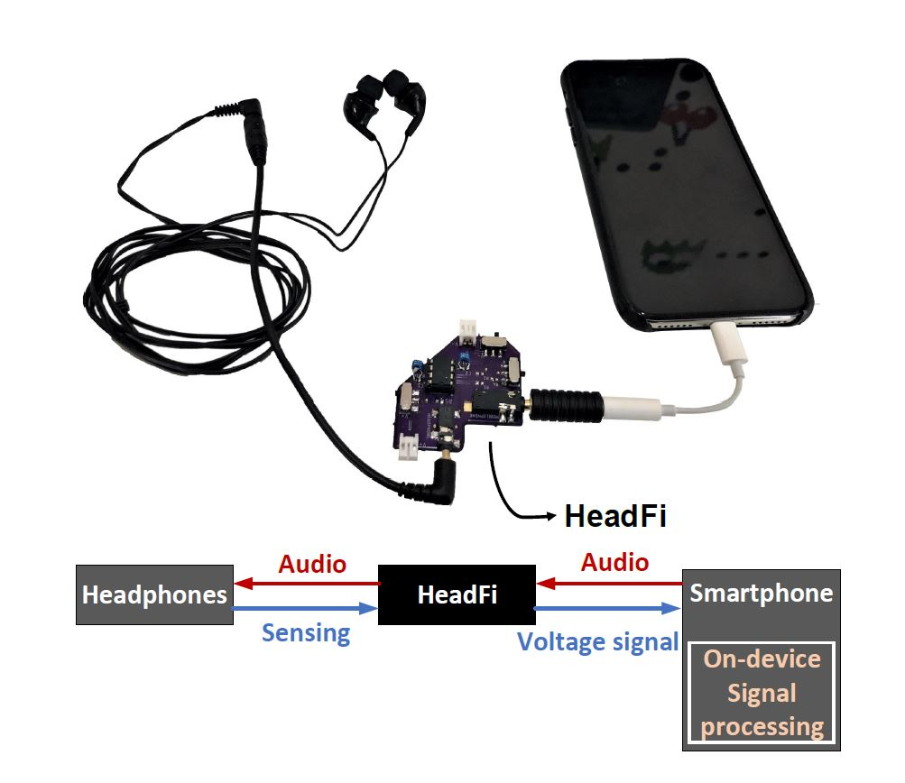

Headphones continue to grow more intelligent as new functions (e.g., touch-based gesture control) appear. Such functions usually rely on auxiliary sensors (e.g., accelerometer, gyroscope, microphone) that are available on many smart headphones. However, for those headphones that do not have such sensors, supporting these functions becomes a daunting task. This paper presents HeadFi, a design for bringing “smartness” to headphones. Instead of adding auxiliary sensors into headphones, HeadFi turns the pair of drivers that are readily available on all headphones into a versatile sensor to enable new applications spanning across mobile health, user-interfaces, and context-awareness. HeadFi works as a plug-in peripheral connecting the headphones and pairing device (e.g., smartphone). The simplicity (can be as simple as only two resistors) and small form factor of this design lends itself to embedding into the pairing device as an integrated circuit. As a result, we envision HeadFi can serve as a vital supplementary solution to existing smart headphones design by directly transforming “dumb” headphones into intelligent ones. To show the feasibility of our design, we prototype HeadFi on PCB and conduct extensive experiments with 53 volunteers using 54 pairs of non-smart headphones under the institutional review board (IRB) protocols. Experiment results show that HeadFi can achieve 97.2%–99.5% accuracy on user identification, 96.8%–99.2% accuracy on heart rate monitoring, and 97.7%–99.3% accuracy on gesture recognition.

| Schemes | Target Model | Attack Setting | Over-the-Air | Attack Scenes | Successful Rate | Audio Quality (MCD*) |
| Black-box Attacks [1, 2] |
DeepSpeech | Black-box | No | - | - | - |
| Qin et al. | Lingvo | White-box | No | Simulated | - | - |
| Carlini et al. | DeepSpeech | White-box | No | - | - | - |
| Abdullah et al. | DeepSpeech | White-box | Yes | 0.3 m (1 foot) | 15/15 (trials) | - |
| CommanderSong | Kaldi | White-box | Yes | 1.5 m | 78% | 22.3 |
| Yakura et al. | DeepSpeech | White-box | Yes | 0.5 m | 80% | 25.1 |
| Meta-Enha | DeepSpeech | White-box | Yes | 6 m (LoS) | 90% | 25.2 |
| Meta-Qual | DeepSpeech | White-box | Yes | 3 m (LoS) | 90% | 21.1 |
*Lower MCD value indicates better sound quality.
Authors:
This paper is published at NDSS 2020.
Cite the Paper
@inproceedings{tao2020Metamorph,
author = {Chen, Tao and Shangguan, Longfei and Li, Zhenjiang and Jamieson, Kyle},
title = {Metamorph: Injecting Inaudible Commands into Over-the-air Voice Controlled Systems},
booktitle={Proceedings of NDSS},
year = {2020}
}